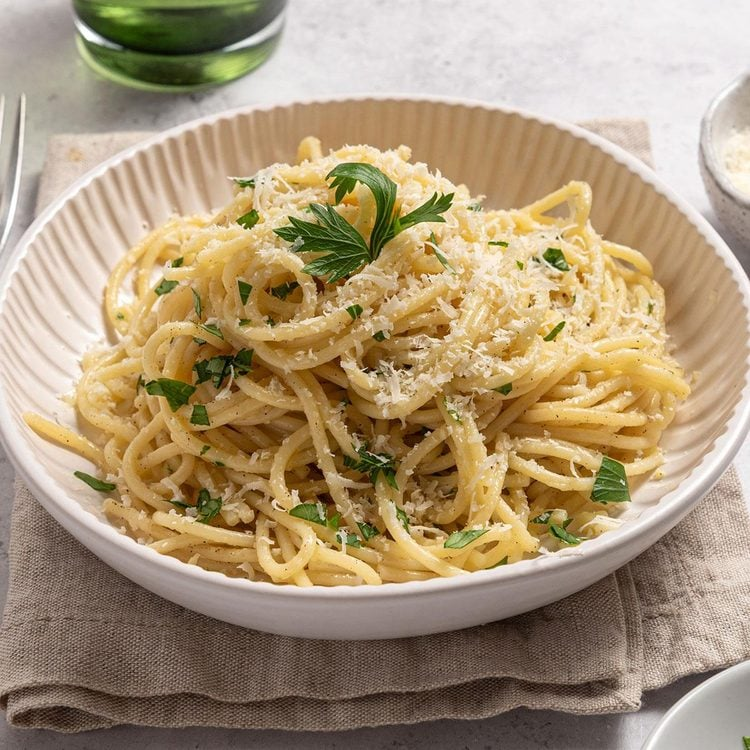

Creamy Garlic Parmesan Pasta
A quick and comforting pasta dish made with butter, garlic, cream, and parmesan. Perfect for busy weeknights and ready in under 30 minutes.
25
mins
Ready in
520
kcal
Per serving
Easy
Difficulty
Ingredients
- 200 g spaghetti or fettuccine
- 2 tbsp butter
- 3 cloves garlic, minced
- 1 cup heavy cream
- 1/2 cup grated parmesan cheese
- Salt & black pepper, to taste
- Fresh parsley, chopped (for garnish)
Instructions
- Cook the pasta in salted boiling water according to package instructions. Reserve 1/4 cup of pasta water.
- In a pan over medium heat, melt the butter and sauté the garlic until fragrant (about 1 minute).
- Add the heavy cream and bring to a gentle simmer.
- Stir in the parmesan cheese until melted and the sauce thickens slightly.
- Add the cooked pasta to the pan and toss to coat. Use reserved pasta water to loosen the sauce if needed.
- Season with salt and pepper. Garnish with chopped parsley and extra parmesan.
- Serve immediately while hot and creamy.
Tips
- Use freshly grated parmesan for best flavor and texture.
- Add grilled chicken or mushrooms for extra protein.
- For a lighter version, replace half the cream with milk.
Approx. Nutrition (per serving)
- Calories: 520
- Carbs: 55 g
- Protein: 16 g
- Fat: 26 g